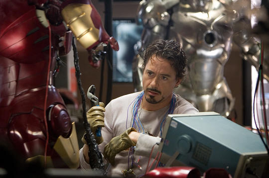
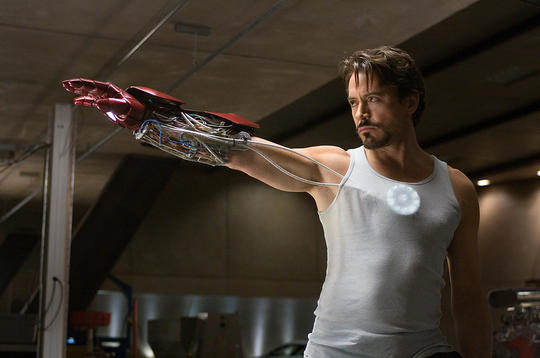

Full Name: Tony Stark
Place Of Birth: New York
Alignment: Good
Gender: Male
Race: Human
Intelligence: 100%
Strength: 85%
Speed: 58%
Durability: 85%
Power: 100%
Combat: 64%
Genius inventor Tony Stark continued his father Howard Stark’s weaponry business after his parents’ untimely deaths and lead the company to even greater heights of innovation and profit. After a weapon demonstration in Afghanistan, Tony was kidnaped by a terrorist group and was forced to create the new demonstrated weapon. Instead Tony build his first suit of armor and a mini arc reactor, using nothing but recyclable parts from other weapons and machines. After using his first armor to escape his captors, Tony returned home in order to write the wrongs he has made and work towards making a difference in the world by continuing to upgrade his suit to come more responsive to a larger amount of threats. Over time his suit evolves from needing a assembly of machines needed to help him put on the suit to being able to store his entire suit inside his reactor.
|

|

|